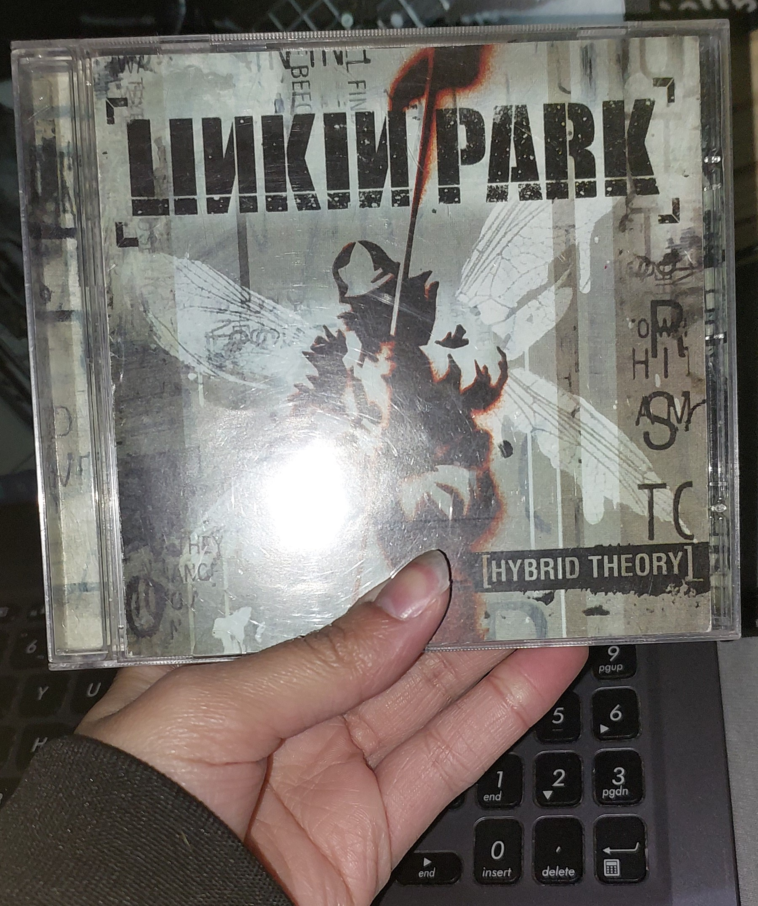
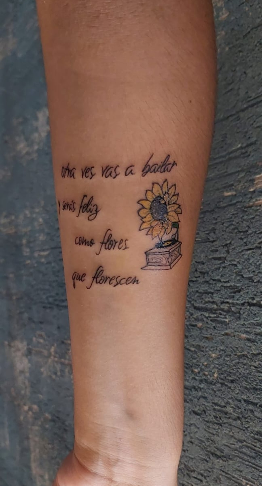
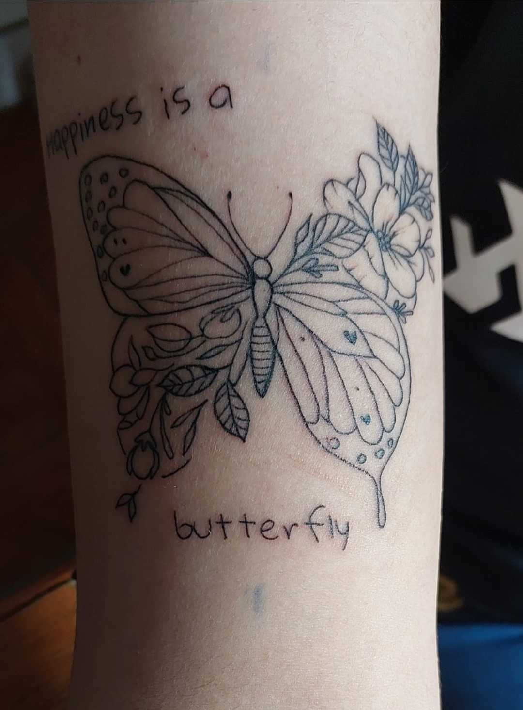

Página Inicial
Algumas curiosidades minhas que acho interessante as pessoas saberem :)
- Como disse antes, sou apaixonada por música e meus gêneros favoritos são Rock, Metal, Pop e Disco anos 70 :)
- O primeiro CD que eu ganhei foi o álbum Hybrid Theory da banda Linkin Park, eu tinha 13 anos de idade ;)
- Amo Tatuagens e tenho 2 (mas já planejo muitas mais)
- Amo a língua Italiana e meu sonho é morar na Itália
- Nunca fiz curso de Inglês porém meu nível é intermediário por que consegui aprender sozinha com a ajuda de músicas e video games

Meu primeiro CD, LP se tornou minha banda favorita

Minha primeira tattoo, é a letra da música "Chiquitita" da banda ABBA (que eu amo) versão espanhol
A letra é "Otra vez vas a bailar y serás feliz, como flores
que florescen" ;)

Minha segunda tattoo da Lana Del Rey com o título da música dela "Happiness Is a Butterfly", ou em português "A Felicidade é como uma Borboleta"